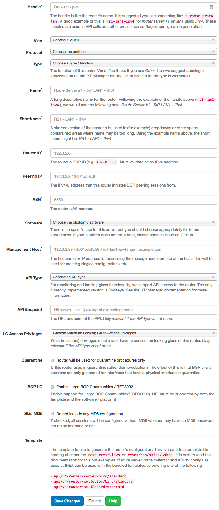

Routers
IXP Manager can generate router configuration for typical IXP services such as:
- route collectors;
- route servers (with IRRDB filtering); and
- AS112 services.
See the above pages for specific information on each of those use cases and below for instructions on how to generate configuration.
Managing Routers
The basic elements of a router are configured in IXP Manager under the IXP Admin Actions - Routers option on the left hand menu.
When you goto add / edit a router, the green help button will provide explanatory details on each field of information required:

From the router management page, you can:
- add / edit / delete a router;
- view all the details of a router;
- generate and view a router's configuration.
Configuration Generation Overview
The simplest configuration to generate is the route collector configuration. A route collector is an IXP router which serves only to accept all routes and export no routes. It is used for problem diagnosis, to aid customer monitoring and for looking glasses (see INEX's here).
The original Bird v1 configuration simply pulls in a fairly standard header (sets up router ID, listening address and some filters) and creates a session for all customer routers on the given VLAN. The new Bird v2 configuration has more features and replicates the route server filtering mechanism but tags and accepts all routes for diagnosis.
When adding a router, you give it a handle. For example: rc1-lan1-ipv4 which, for INEX, would mean a route collector on peering LAN1 using IPv4. Then - for the given router handle - the configuration can be generated and pulled using the API as follows:
#! /bin/sh
# The API Key.
# This is generated in IXP Manager via the top right menu: *My Account -> API Keys*
KEY="your-admin-ixp-manager-api-key"
# The base URL of your IXP Manager install plus: 'api/v4/router/gen-config'
URL="https://ixp.example.com/api/v4/router/gen-config"
# The handle is as described above:
HANDLE="rc1-lan1-ipv4"
# Then the configuration can be pulled as follows:
curl --fail -s -H "X-IXP-Manager-API-Key: ${KEY}" ${URL}/${HANDLE} >${HANDLE}.conf
Configurations for the route server and AS112 templates can be configured just as easily.
The stock templates for both are secure and well tested and can be used by setting the template element of the router to one of the following. NB: from May 2019, we recommend you use IXP Manager v5 and Bird2 templates.
- AS112:
'api/v4/router/as112/bird/standard''api/v4/router/as112/bird2/standard'
- Route Collector:
'api/v4/router/collector/bird/standard''api/v4/router/collector/bird2/standard'
- Route Server:
'api/v4/router/server/bird/standard''api/v4/router/server/bird2/standard'
We also provide sample scripts for automating the re-configuration of these services by cron:
- AS112 scripts can be found here.
- Route collector scripts can be found here.
- Route server scripts in this directory. These are quite robust and have been in production for ~5 years at INEX (as of Jan 2019).
All of these scripts have been written defensively such that if there is any issue getting the configuring or validating the configuration then the running router instance should be unaffected. This has worked in practice at INEX when IXP Manager was under maintenance, when there were management connectivity issues and when there were database issues. They also use the updated API (see below) to mark when the router configuration update script ran successfully.
Updated API
It can be useful to know that the scripts for updating the router configuration for AS112, route collector and route server BGP daemons run successfully. At INEX for example, we have three LANs and so 10 individual servers running a total of 30 Bird instances which is unwieldy to check and monitor manually.
When viewing routers in IXP Manager, you may have noticed the Last Updated column which will initially show (unknown). All our update scripts (see above) trigger the updated API call when a route configuration run has completed successfully. Note that this does not mean that a configuration has necessarily changed but rather that the update script ran and executed correctly. In other words: the configuration was successfully pulled from IXP Manager, compared to the running configuration and, if changed, successfully applied.
The API call to update the last updated field to now is a POST as follows:
curl -s -X POST -H "X-IXP-Manager-API-Key: my-ixp-manager-api-key" \
https://ixp.example.com/api/v4/router/updated/{handle}
where {handle} should be replaced with the route handle as described above.
The result is a JSON object with the datetime as set and is equivalent to the result of the following API call which fetches the last updated field without setting it:
curl -s -X GET -H "X-IXP-Manager-API-Key: my-ixp-manager-api-key" \
https://ixp.example.com/api/v4/router/updated/{handle}
{"last_updated":"2017-05-21T19:14:43+00:00","last_updated_unix":1495394083}
There are two useful additional API endpoints. To get the last updated time of all routers, use:
curl -s -X GET -H "X-IXP-Manager-API-Key: my-ixp-manager-api-key" \
https://ixp.example.com/api/v4/router/updated
{"handle1":{"last_updated":"2017-05-21T19:14:43+00:00","last_updated_unix":1495394083},
"handle2":{"last_updated":null,"last_updated_unix":null},
...}
The above output shows the format of the reply as well as the fact that routers without a last updated value set will be included as null values.
Lastly, you can request the last updated time of routers where that time exceeds a given number of seconds. In this call, routers without a last updated time will not be returned. This is useful for monitoring applications such as Nagios where you would want a warning / alert on any routers that have not updated in the last day for example:
curl -s -X GET -H "X-IXP-Manager-API-Key: my-ixp-manager-api-key" \
https://ixp.example.com/api/v4/router/updated-before/86400
[]
This example also shows that an empty JSON object is returned for an empty result. Otherwise the format of the reply is the same as for the call above for all routers:
{"handle1":{"last_updated":"2017-05-21T19:14:43+00:00","last_updated_unix":1495394083},...}
Examples
We use Travis CI to test IXP Manager before pushing new releases. The primary purpose of this is to ensure that the configuration for routers generated matches known good configurations from the same sample database.
These known good configurations also serve as useful examples of what the standard IXP Manager configuration generates.
See these known good configurations here and:
as112: AS112 router configurations conforming to rfc7534 (AS112 Nameserver Operations) and implementing rfc7535 (AS112 Redirection Using DNAME). There are configs to serve queries over both IPv4 and IPv6. See the AS112 documentation for more details.rc1: route collector configurations. Peering with the route collector is mandatory at many IXPs including INEX. These are incredibly useful for monitoring, diagnosing issues and providing looking glasses. We also use the quarantine version of these for turning up new member connections.rs1: route collector configurations. See below for full details of what these implement. See the route servers documentation for more details.
Live Status
The live status of any configured routers that have API access can be seen in IXP Manager via the Live Status sub-menu option of Routers on the left hand side menu.
Each router is queried twice via AJAX requests to provide:
- BGP daemon version
- API version
- configured BGP sessions
- established BGP sessions
- last updated time
- last reboot time